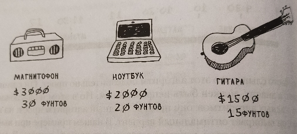
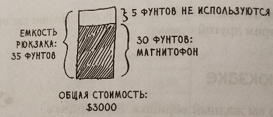
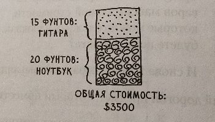

2. Задача о рюкзаке (пример того, когда алгоритм не даёт наилучшего решения).
Условие:
Представьте, что вы жадный воришка. Вы забрались в магазин с рюкзаком, и перед вами множество товаров, которые вы можете украсть. Однако ёмкость рюкзака не бесконечна: он выдержит не более 35 фунтов.
Требуется подобрать набор товаров максимальной стоимости, которые можно сложить в рюкзак.
И снова жадная стратегия выглядит очень просто:
1. Выбрать самый дорогой предмет, который поместится в рюкзаке.
2. Выбрать следующий по стоимости предмет, который поместится в рюкзаке... И так далее.
Вот только загвоздка, статегия не работает так как надо со следующими предматами:

В рюкзаке поместятся товары общим весом не более 35 фунтов. Самый дорогой товар - магнитофон, вы выбираете его. Теперь ни для чего другого места уже не осталось.

Вы набрали товаров на 3000$. Если бы вместо магнитофона вы выбрали ноутбук и гитару, то стоимость добычи соcтавила бы 3500$.

Очевидно, жадная стратегия не даёт оптимального решения. Но в таких областях жадные алгоритмы работают просто отлично, потому что они просто реализуются, а полученное решение обычно близко к оптимуму.
Код:
import copy
"""ФУНКЦИЯ ДОБАВЛЕНИЯ ПРЕДМЕТОВ В result (КОНЕЧНЫЙ РЕЗУЛЬТАТ)."""
def function_mod_result():
global result
a = max(dict(things.values()).keys())
temp = [[x, y] for x, y in things.items() if y[0] == a]
result += temp
"""ФУНКЦИЯ МОДЕРНИЗАЦИИ ГЛАВНОЙ ХЕШ-ТАБЛИЦЫ. УБЕРЁМ СЛИШКОМ ТЯЖЁЛЫЕ ТОВАРЫ."""
def function_mod():
free_for_weight = 0
for i in result:
free_for_weight += i[-1][-1]
free_for_weight = backpack - free_for_weight
temp = copy.copy(things)
for a, b in temp.items():
if b[-1] > free_for_weight:
del things[a]
"""ФУНКЦИЯ ПРОВЕРКИ ОКОНЧАНИЯ ЦИКЛА. МОЖНО ЛИ ЕЩЁ ПОЛОЖИТЬ ЧТО-НИБУДЬ В РЮКЗАК."""
def function_check():
temp = False
free_for_weight = 0
for i in result:
free_for_weight += i[-1][-1]
free_for_weight = backpack - free_for_weight
for i in things.values():
if i[-1] <= free_for_weight:
temp = True
break
return temp
"""ВХОДНЫЕ ДАННЫЕ. ХЕШ-ТАБЛИЦА для предметов."""
things = {
"Магнитофон": [3000, 30],
"Ноутбук": [2000, 20],
"Гитара": [1500, 15]
}
backpack = 35 # грузоподъёмность рюкзака
"""ОПРЕДЕЛЕНИЕ ПЕРВОГО ПРЕДМЕТА."""
a = max(dict(things.values()).keys()) # самая дорогая вещь, которую можно положить (вес для первой вещи не проверяется)
result = [[x, y] for x, y in things.items() if y[0] == a] # результат с первой вещью, который будет дополняться далее --> [['Магнитофон', [3000, 30]]]
"""УБРАТЬ ПЕРВЫЙ ПРЕДМЕТ ИЗ things."""
for i in result: # в цикле убрать вещи, который стали определены в result из things
if i[0] in things:
del things[i[0]]
"""ОСНОВНОЙ ЦИКЛ."""
while function_check(): # при наших входных данных условие для цикла будет False, но если изменить backpack, к примеру на 45, то цикл запустится
function_mod() # уберём слишком тяжёлые товары из списка подходящих для рюкзака из things
function_mod_result() # переместим один товар из things в result
for i in result: # в цикле убрать вещи, который стали определены в result из things
if i[0] in things:
del things[i[0]]
"""выведем список вещей в stdout"""
print()
usd = int()
for i in result:
usd += i[-1][0]
print(i[0])
print(f"Сумма: ${usd}")
print()